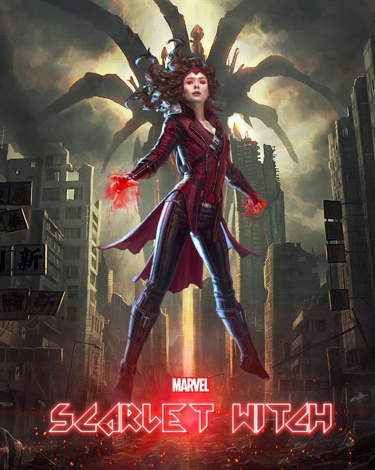

-

- 
" Captain America ( Steve Rogers ) là một siêu anh hùng hư cấu
xuất hiện trong truyện tranh Mỹ được xuất bản bởi Marvel Comics . Được tạo bởi họa sĩ truyện tranh Joe Simon và Jack Kirby , nhân vật lần đầu tiên xuất hiện trong Captain America Comics # 1 ( bìa ngày tháng 3 năm 1941) từ Timely Comics ,
tiền thân của Marvel Comics. Captain America được thiết kế như một siêu năng lực yêu nước "
Deadpool là một bộ phim siêu anh hùng Mỹ năm 2016dựa trênnhân vật Marvel Comics cùng tên , được phân phối bởi 20th Century Fox . Đây là phần thứ tám của X-Men loạt phim và độc lập đầu tiên Deadpool phim. Được đạo diễn bởi Tim Miller từ một kịch bản của Rhett Reese và Paul Wernick , bộ phim có sự tham gia của Ryan Reynold trong vai Wade Wilson / Deadpool cùng với Morena Baccarin , Ed Skrein , TJ Miller , Gina Carano và Brianna Hildebrand.
Xem chi tiếtWanda là mộtbộ phim độc lập của Mỹ năm 1970được viết và đạo diễn bởi Barbara Loden , người cũng đóng vai chính. Lấy bối cảnh vùng than antraxit ở phía đông Pennsylvania , bộ phim tập trung vào một nữ nhân vật chính cô độc với những lựa chọn hạn chế cho một cuộc sống tốt hơn. Đó là một sự hiếm hoi trong quá trình làm phim vào những năm 1970, với cuộc khủng hoảng hiện sinh của một người phụ nữ, được viết và chỉ đạo bởi một người phụ nữ.
Xem chi tiết